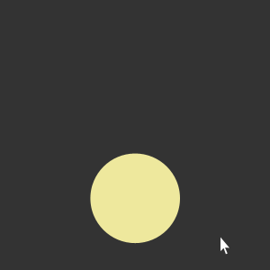

Nous sommes quatre étudiants du master 2 Design d'Interface, Multimédia et Internet. Pop'Book est un projet issu du cours Design d'Information. Il met en perspective les livres adaptés au cinéma afin de quantifier l'importance de la littérature en tant que source d'inspiration pour celui-ci.
Nous vous invitons à découvrir ces données qui regroupent plus de 400 adaptations !
Bonne séance !

Les petits cercles directement affichés correspondent aux films. Les plus grands cercles qui s'affichent au survol correspondent aux auteurs dont sont issus les films. Au survol des petits cercles, le noms des auteurs associés s'affichent sur le ticket. Au clic, les informations relatives aus films s'affichent.